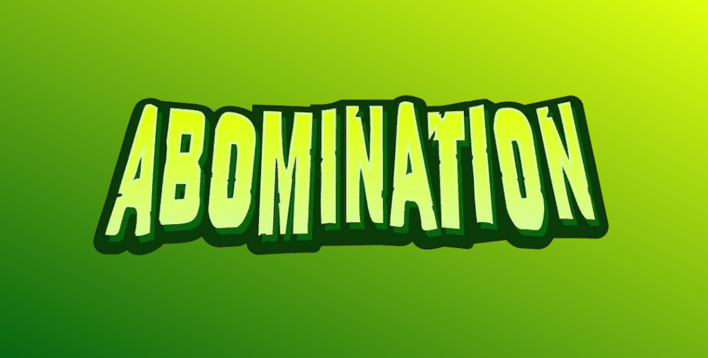
L'Abomination (Emil Blonsky) (Terre-616)
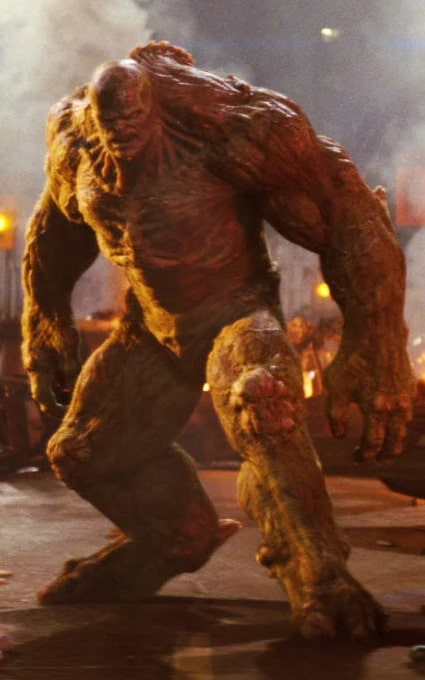
Origines :
Pendant la guerre froide, Emil Blonsky était un espion communiste infiltré dans une base aérienne américaine du Nouveau-Mexique, commandée par le général Thaddeus « Thunderbolt » Ross, et où le docteur Bruce Banner, physicien nucléaire devenu Hulk, a mené ses expériences sur les rayonnements gamma.
Alors que Bruce s’apprêtait à utiliser sa machine sur lui-même afin de tuer le Hulk, en se bombardant d'une dose suffisamment élevée de rayons gamma, des agents de sécurité l’interceptent et l'emmènent.
A l'insu de Banner, Blonsky se cachait dans son laboratoire, où il photographiait son équipement de radiation gamma, pour le compte de l'URSS.
Ignorant la nature de la machine que Banner s'apprêtait à utiliser, Blonsky se plaça devant et l'activa.
Celle-ci le bombarda d'une dose de radiations gamma plus concentrée et plus intense que celle que Banner avait reçue lors de l'explosion de la bombe gamma qui l'avait transformé en Hulk.
Comme Banner, Blonsky possédait un facteur génétique inconnu qui lui avait évité une telle dose de radiation gamma.
Au lieu de cela, les radiations eurent un effet mutagène immédiat sur Blonsky, le transformant immédiatement en monstre à la peau verte, semblable à Hulk, en conservant tout son intellect.
L' Abomination gagna une force supérieure à celle de Hulk, mais en contrepartie, ne peut plus reprendre forme humaine.
Par la suite, il affrontera Hulk à de nombreuses reprises.
Après une énième défaite face au Colosse, une navette spatiale américaine le trouvera prisonnier dans la glace.
Il sera porté à l'attention du général Ross et réanimé par le chef de l'AIM, M.O.D.O.K., avec qui Ross a formé une alliance.
Hulk, possédant temporairement l'intelligence de Banner, avait bénéficié d'une grâce présidentielle, à laquelle Ross était en désaccord.
C'est pour cette raison qu'il conclut un accord avec M.O.D.O.K. visant à ressusciter l'Abomination pour éliminer Hulk.
Cependant, à cause de ses défaites répétées face à Hulk, l'Abomination avait développé une peur pathologique envers son némésis.
MODOK le soumit à un conditionnement psychologique douloureux, afin de le rendre plus effrayé par MODOK qu'il ne l'est par Hulk, et l'envoya se battre.
Mais il subira une nouvelle défaite et MODOK utilisera son Mind-Beam pour le punir.
Après ces événements, il sera quitté par sa femme Nadia, et complètement obsédé par Banner.
Blonsky entreprend d'empoisonner son épouse, Betty Ross, en la transfusant avec son propre sang dans le but de faire croire à Bruce qu'il est la principale source d'irradiation.
Mais Banner découvre le plan de l'Abomination et, sous sa forme de Hulk, prend le dessus sur lui après un combat intense.
Finalement épargné par son adversaire, Blonsky se remet en question et réalise qu'il est lui-même la cause de ses malheurs.
Quelques mois plus tard, le général Ross manipule Hulk pour qu'il attaque l'Abomination.
Ce dernier, aux bords de la mort, est capturé et torturé par le général, contraint de regarder en boucle un film de sa vie familiale d'avant sa transformation en monstre.
Il sera ensuite libéré par une organisation secrète visant à tuer Hulk, mais échouera une fois de plus.
Il affronte par la suite les X-Men et Miss-Hulk pendant que Hulk est exilé sur la planète Sakaar par les Illuminati.
Juste après l'événement World War Hulk, alors que Bruce est enfermé dans un complexe souterrain surprotégé, le corps de l'Abomination sera retrouvé en Russie, apparemment assassiné par Hulk.
Cependant, cette hypothèse est impossible car Hulk est prisonnier du SHIELD.
Après enquête, le corps de l'Abomination s'avère être criblé de balles composées d'Adamantium, et l'unique survivante, traumatisée, ne cessera de répéter les mots « Rouge... Hulk Rouge... »
Une organisation encore sans nom acquiert du matériel biologique récolté sur un Bruce Banner mortellement blessé, et l'utilisera pour ressusciter l'Abomination, sous leur contrôle, « libre d'un esprit ou d'une conscience » et doté d'une faculté à traquer Hulk.

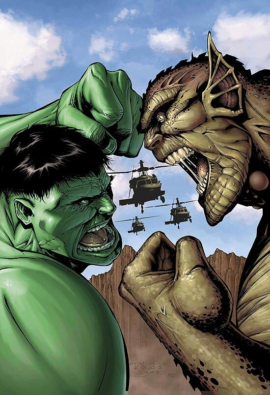
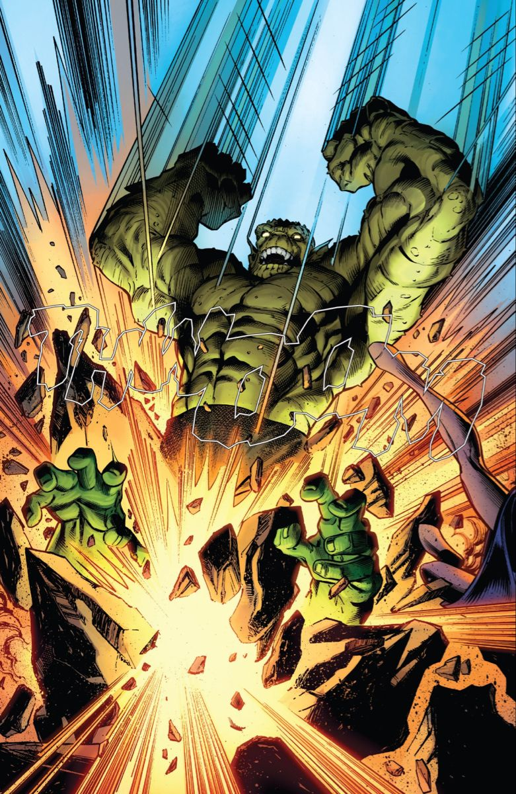
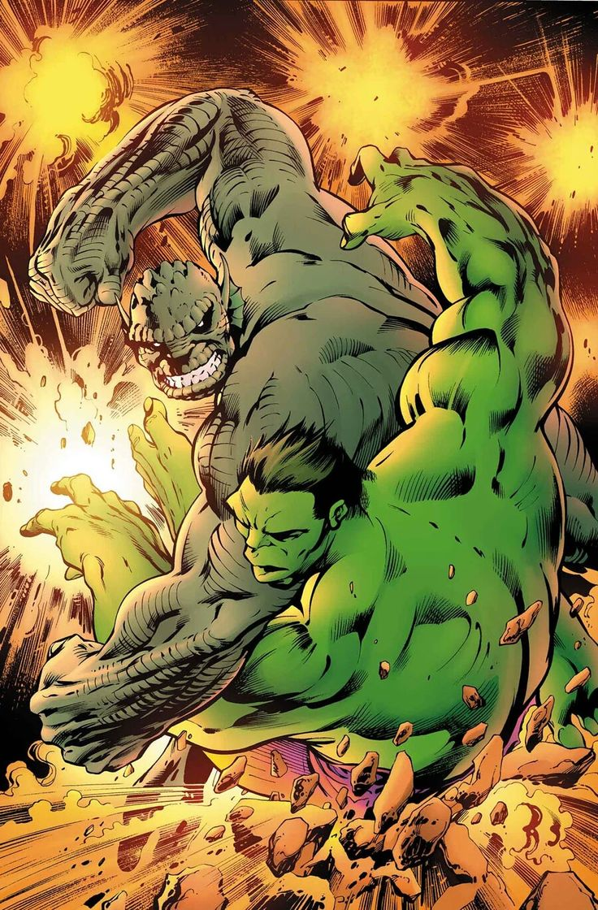
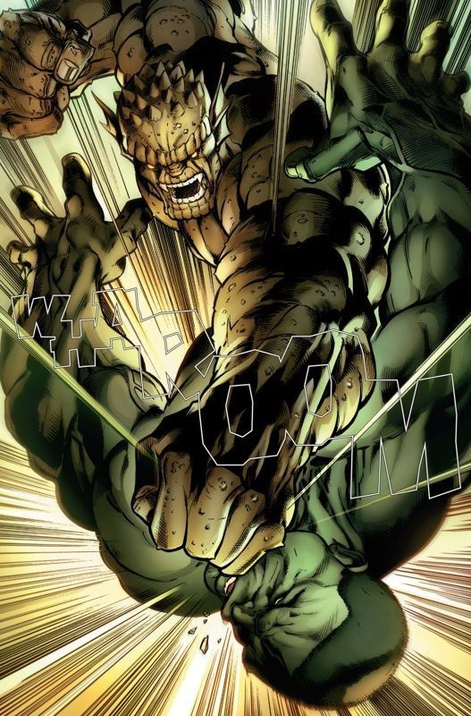
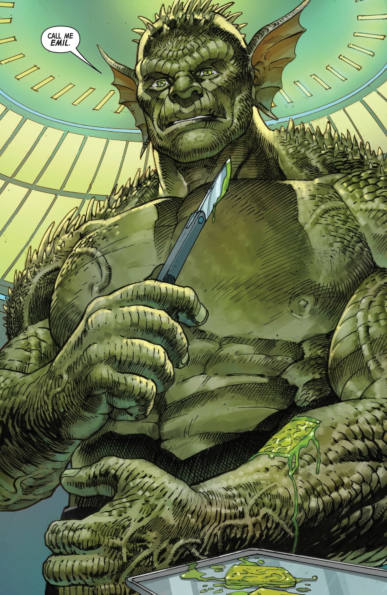
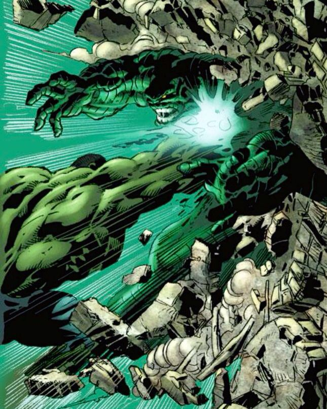
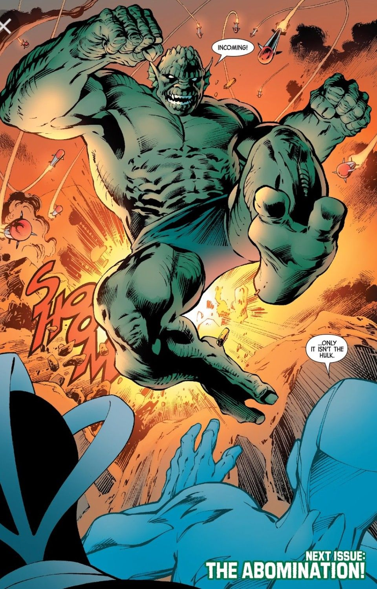
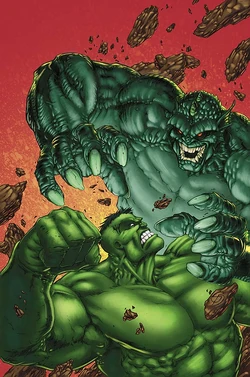
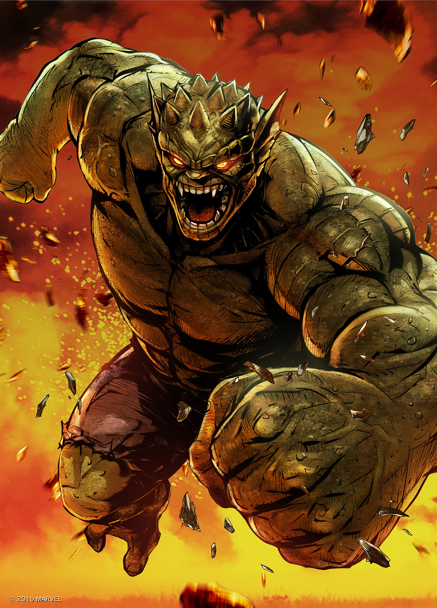
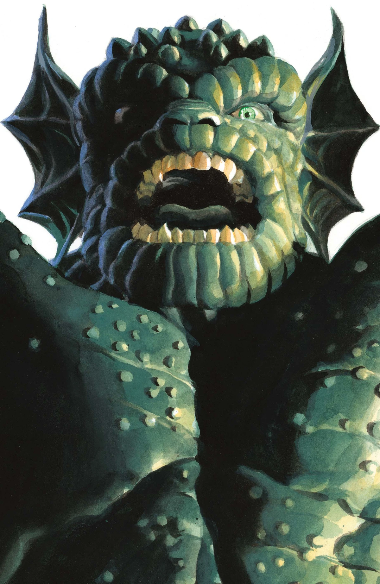
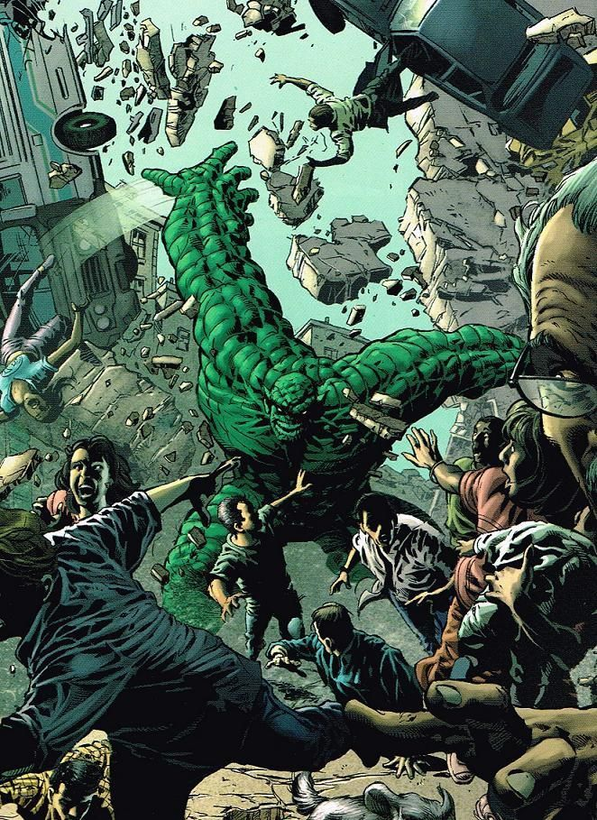
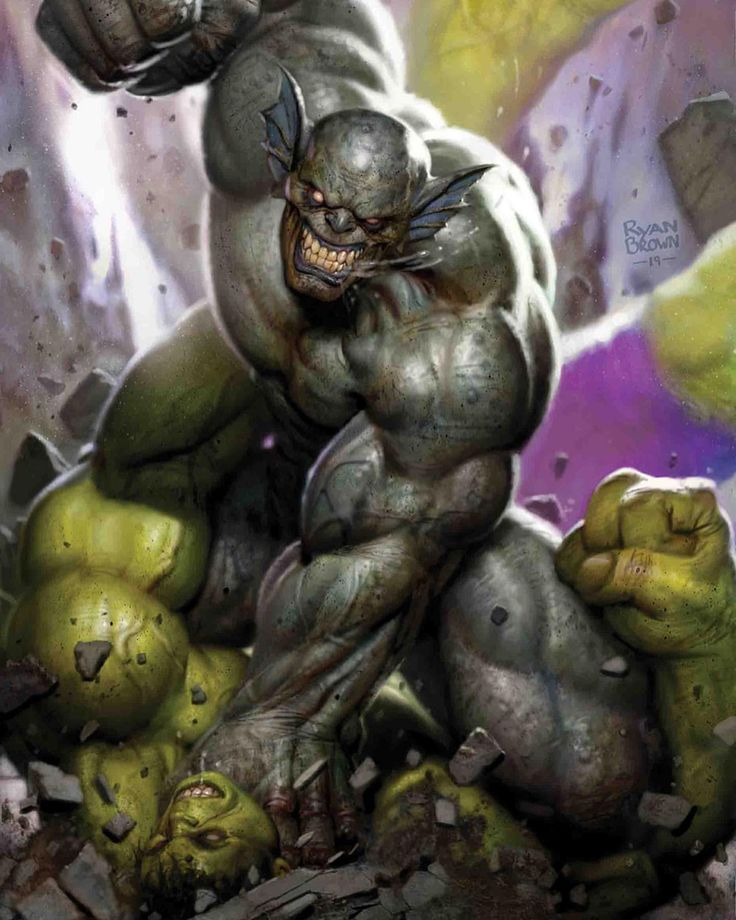
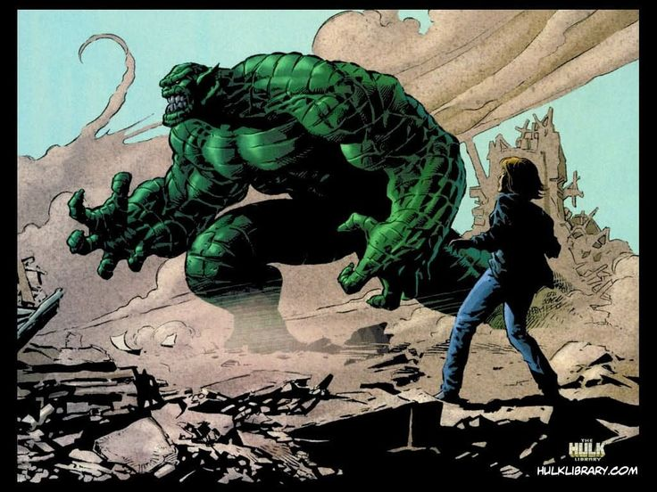
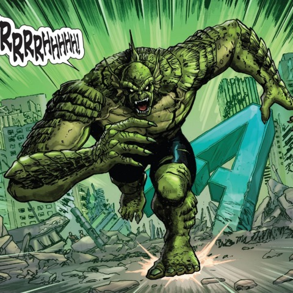
Capacités :
L'Abomination possède des capacités similaires à celles de Hulk, avec cependant quelques différences notables :
Son intelligence n'a pas été affectée par sa métamorphose, mais il ne peut cependant pas revenir à son apparence d'origine.
Sa force est supérieure à celle de Hulk lorsque celui-ci est calme, mais contrairement à lui, sa force n'augmente pas en fonction de sa colère.
Grâce à la puissance de ses jambes, il est capable de faire des bonds d'environ trois kilomètres de distance.
Sa peau très épaisse lui permet de résister à des chocs violents, comme l'impact d'un obus, ou des températures extrêmes (de -155°C à 2 000°C).
Il dispose également d'un pouvoir de régénération, moins efficace que celui de Hulk, mais tout de même capable de guérir toute blessure non mortelle et même de faire repousser ses yeux s'ils ont été blessés.

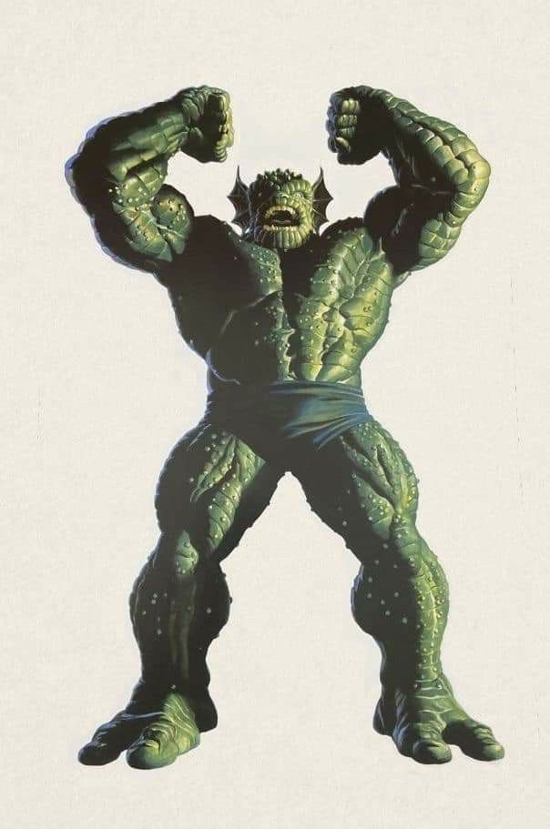
Apparence :
L'Abomination est un monstre massif, à l'aspect reptilien et humanoïde.
Il est souvent représenté plus grand que Hulk, avec une taille entre 2,7 et 3 mètres de haut, très musclé, avec une structure osseuse importante et une peau épaisse.
Sa peau est verte foncée, avec une texture écailleuse et rugueuse rappelant celle d'un reptile ou d'un amphibien, avec un visage difforme, des yeux jaunes ou rouges et une bouche garnie de crocs.
Ses oreilles sont pointues et membraneuses, parfois semblable à de petites nageoires.
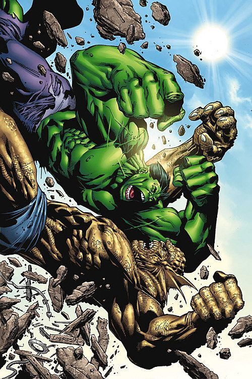
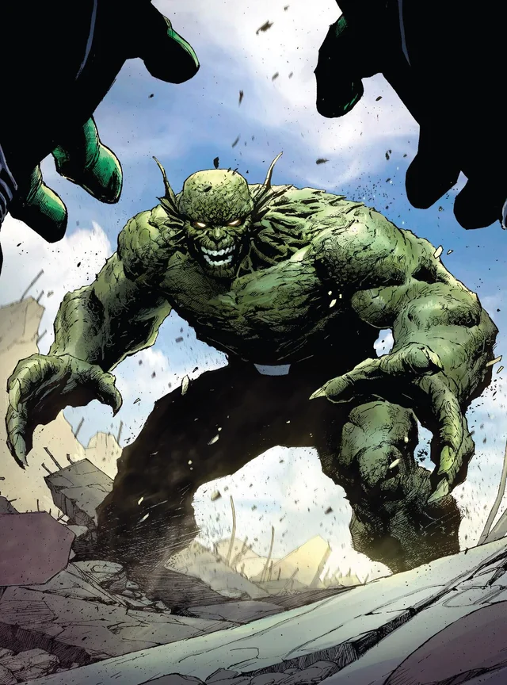